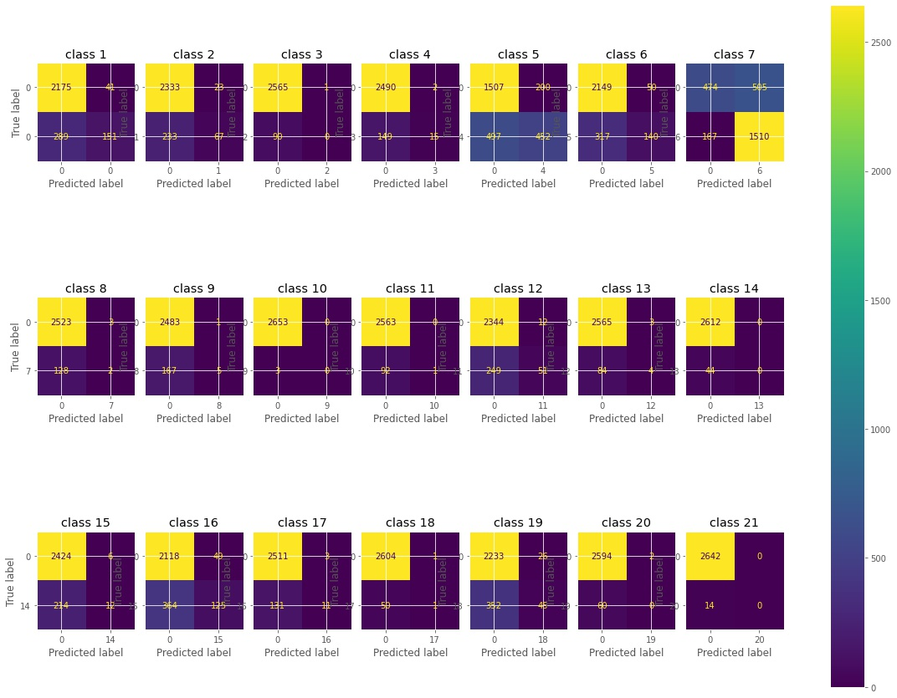

Multi-Label Classification
My portion of the project is to build a model that takes the movie titles and descriptions as feature, and spit out the genre for that movie.
The reason I am interested in doing this is that when I worked on project 2 with a similar movie dataset scrapped from IMDB, I had a hard time dealing with multiple genre tags given in the genre column. It same with no specific number of tags and no specific sequence between tags.

This had made plotting visualizations super difficult for me.
In my model, I used TF-IDF function to vectorize my feature, which score each word based on how frequently it appear in the bag of words of movie titles and descriptions.

There are 21 tags in genre.
This is a bar chart for the top 100 most frequent words in the bag of words.
Logistic Regression
With the help of MultiLabelBinarizer(), I was able to assign these tags to outcome in arrays of array with binary information, and fit the data to a logistic regression model in a one vs. all fashion. This can be seen as the foundation of a serviceable movie recommendation system.
I adapted a function to sample the features and spit out the predicted genre and the actual genre of the movies.
Evaluations of The Predictions
The challenge of this is that many classification studies focus on single-labeled classification. Therefore, even though the result of my prediction doesn't seem to be good, I had a hard time figuring out how to fit this multi-labeled data into other models and create good visualizations.
This is the classification report. The numbers aren't that great.
This is a confusion matrix plot for each of the 21 labels
